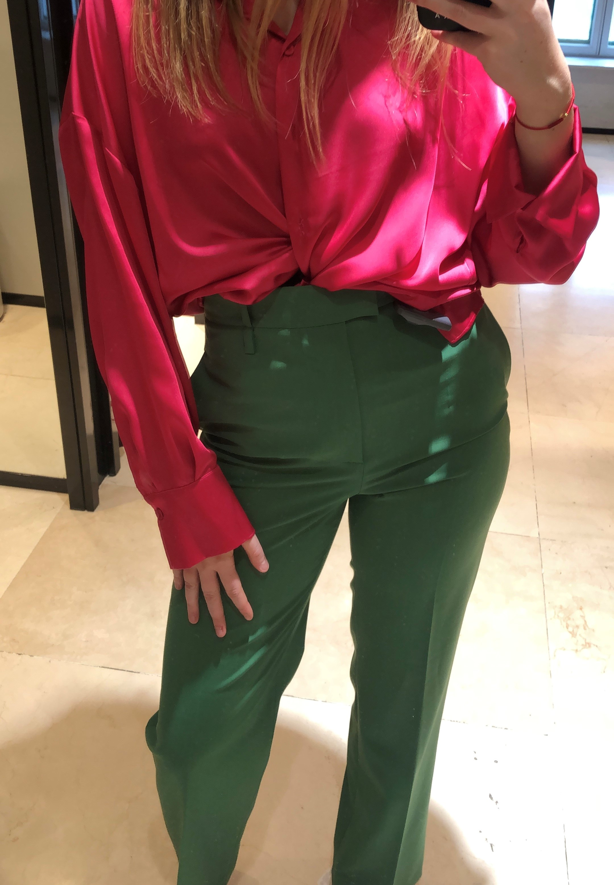
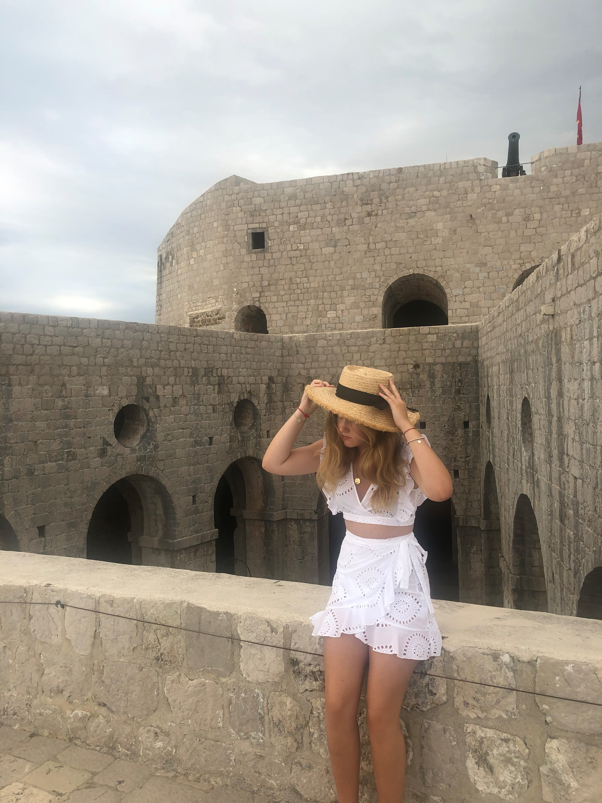

LJETNI TRENDOVI 2021.
Devet od dvanaest mjeseci priželjkujem ljeto, more, sunce, plažu i sol u kosi.
Djevojke u šarenim ljetnim haljinama, sa šeširima volimo!
Boje, boje i boje!
Što šarenije to bolje, ovo ljeto zakon je: Više je više! Od sakoa i ljetnih haljina u
svim bojama do kratkih hlača i badića. Četiri boje koje su vladarice ovog ljeta su:
narančasta, fuksija, svijetlo plava i zelena. Za najhrabrije preporučam isprobati
sve četri boje spojiti u jedan outfit, a za one manje hrabre narančasto-plava
kombinacija ili fuksija-zelena će biti dobitna.

Šešir čuva glavu!
Mama mi je tu rečenicu kroz djetinjstvo 300 puta ponovila, ali uporna Petra se neda i ne nosi šešir i svaki dan nakon plaže ju boli glava... Petra se prošlo ljeto opametila i ne može zamisliti odlazak na plažu bez šešira i više ju ne boli glava nakon plaže. Za damice na plaži i na after beach partyima preporučam one s većim i okruglim obodom, još ako ima mašnu povezanu je pun pogodak. Za klasičarke je najbolji odabir Panama šešir, a za sportašice i cure u pokretu šilterica. Ne budi Petra i nosi šešir ljeti!

Široke lanene hlače
Bijele, crne, tamno plave, u boji, nećete promašiti ni sa jednima. Ugodne su,
lagane, nikad nije vruće u njima i tako se prekrano vijore na maestralu. Za laganu
šetnju rivom navečer ili jutarnju kavicu na plaži biti će vaš najbolji prijatelj ovo
ljeto.
povratak na stranicu: MODA